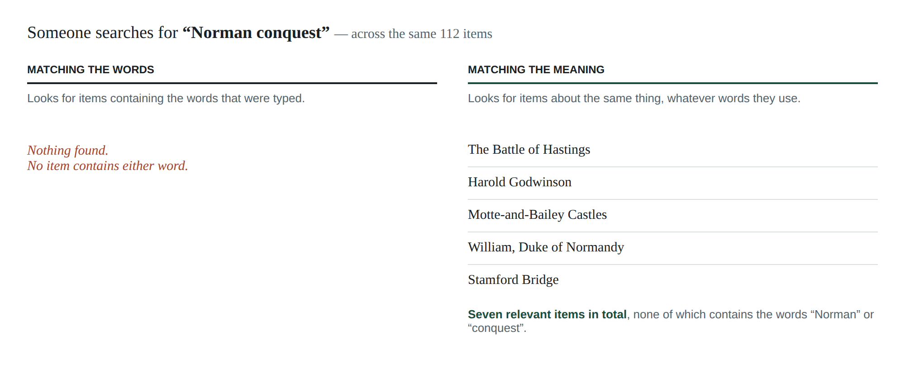

A better way to search a large collection, and what it would take to run it.
Someone searches your catalogue, gets nothing back, and concludes you do not hold anything on the subject. Often you do. They simply used different words from the ones in your records.
This happens because ordinary search matches words. It compares what the reader typed against the text you hold, and ranks by how many words overlap. It is fast, predictable, and it has one blind spot: if the reader's words are not in your text, the item cannot be found at all. Not ranked low — not found.
Your cataloguers and your readers rarely use the same vocabulary. That gap is invisible to you, because a search that returns nothing looks exactly like a collection that holds nothing.
We built a test collection of 112 articles and ran real searches against it. These are actual results, not illustrations.
"Norman conquest"
Ordinary search returns nothing at all. The collection holds seven relevant items — an account of the Battle of Hastings, a life of William of Normandy, the Domesday Book, the Bayeux Tapestry and three more. Not one of them contains the phrase "Norman conquest", so not one can be found.
Searching by meaning returns all seven.
"why does bread rise"
Ordinary search returns an article about inflation. Not a mistake in the software — that article contains the sentence "a sustained rise in the general price level". One shared word, no shared meaning.
Searching by meaning returns the articles on yeast, gluten and sourdough.
The second example is the more damaging of the two in practice. A search that returns nothing at least tells the reader something is wrong. A search that returns something confidently irrelevant wastes their time and quietly erodes their trust in the catalogue.

Instead of comparing words, the system compares meaning. Every item in the collection is read once, in advance, and placed according to what it is about. When a reader searches, their question is placed the same way, and the closest items are returned — whether or not they happen to share any words.
Nothing about your records changes. Nothing is rewritten or replaced. This sits alongside what you already have.
We wrote 32 test questions, phrased the way people actually type rather than the way cataloguers write, and recorded by hand which items in the collection genuinely answered each one. Then we ran all 32 both ways and compared.
| Across 32 test questions | Ordinary search | Searching by meaning |
|---|---|---|
| Gave the better set of results | 1 | 30 |
| Equally good | 1 question, both methods perfect | |
| Found nothing relevant at all | 8 | 0 |
Ordinary search was not useless on the rest — it often found something partly relevant. The decisive column is the last one: on a quarter of the questions it returned nothing usable whatsoever, and on one question it was genuinely the better of the two.
One caveat worth stating plainly: we wrote both the test collection and the test questions. That is a fair way to compare two methods against each other on identical material, but it is not proof of how the system performs on your collection. Before committing to anything, we would repeat exactly this test on a sample of your own records and your own readers' searches. That result is the one that should decide it.
The searching itself is inexpensive and predictable, because the work of reading the collection happens once, up front, rather than on every search.
| Item | Cost | When |
|---|---|---|
| Hosting | about £20 a month | ongoing |
| Preparing a collection of 100,000 items | £70 – £350 | once |
| Preparing a collection of 1,000,000 items | £650 – £3,300 | once |
| Adding new items later | pennies | as you acquire |
The range on preparation reflects a quality choice we would make together and test before spending anything at scale. Adding items later is cheap because the system only ever looks at what has actually changed — re-running it over an unchanged collection costs nothing at all.
It does not read minds, and it is not always right. Because it works by closeness of meaning, it can rank something related-but-wrong surprisingly highly. In our test, a search for "Norman conquest" returned an article on the Battle of Britain in fifth place — the system associated "invasion of Britain" without distinguishing the century.
It is also not a replacement for exact lookup. If a reader searches an author name, a title or an ISBN, ordinary word matching is better, and the system keeps using it for exactly those searches.
Finally, it will not fix records that are wrong. It finds what your catalogue describes. If a record is miscatalogued, this surfaces the mistake rather than correcting it.